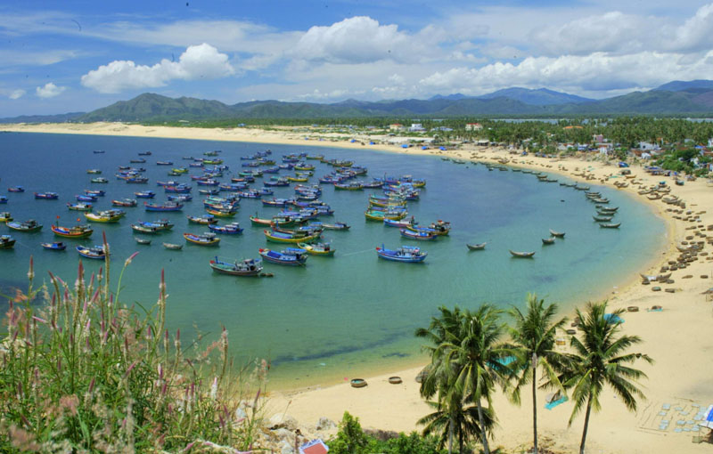

Giới thiệu về tổng quan Bình Định
Giới thiệu về tổng quan Bình Định
Bình Định là tỉnh thuộc vùng Duyên hải Nam Trung bộ Việt Nam, có tổng
diện tích tự nhiên 6.025km2, Bắc giáp tỉnh Quảng Ngãi, Nam giáp tỉnh Phú Yên, Tây giáp tỉnh Gia
Lai, Đông giáp Biển Đông, cách Thủ đô Hà Nội 1.065km, cách Thành phố Hồ Chí Minh 686km, cách
Thành phố Đà Nẵng 300km, cách Cửa khẩu Quốc tế Bờ Y (tỉnh Kon Tum) qua Lào 300km. Là 1 trong 5
tỉnh của Vùng kinh tế trọng điểm Miền Trung (cùng với Thừa Thiên Huế, Đà Nẵng, Quảng Nam, Quảng
Ngãi).
Bình Định nằm ở Trung tâm của trục Bắc - Nam (trên cả 4 tuyến Quốc lộ
1A, đường sắt xuyên Việt, đường hàng không nội địa và đường biển), là cửa ngõ ra biển gần nhất
và thuận lợi nhất của Tây Nguyên, Nam Lào, Đông Bắc Campuchia và Thái Lan (bằng cảng biển quốc
tế Quy Nhơn và Quốc lộ 19).
Các đơn vị hành chính gồm thành phố Quy Nhơn, thị xã An Nhơn và 9 huyện
Tuy Phước, Phù Cát, Phù Mỹ, Hoài Nhơn, Hoài Ân, An Lão, Tây Sơn, Vân Canh, Vĩnh Thạnh. Thành phố
Quy Nhơn là đô thị loại 1, diện tích 284,28 km2, dân số trên 284.000 người, được Chính phủ xác
định là đô thị trung tâm phía nam của Vùng kinh tế trọng điểm Miền Trung, cùng với Đà Nẵng và
Huế là những trung tâm thương mại, dịch vụ và giao dịch quốc tế của cả khu vực Miền Trung và Tây
Nguyên.

Vị trí địa lý và địa hình của tỉnh Bình Định đã chi phối đến các quá
trình hình thành các đặc trưng khí hậu của tỉnh. Bình Định nằm ở miền Nam Trung bộ, thuộc khu
vực nhiệt đới ẩm gió mùa.
Nhiệt độ không khí trung bình năm: ở khu vực miền núi biến đổi 20,1 -
26,1°C; tại vùng duyên hải là 27°C. Độ ẩm tuyệt đối trung bình tháng trong năm: tại khu vực miền
núi là 22,5 - 27,9% và độ ẩm tương đối 79 - 92%; tại vùng duyên hải độ ẩm tuyệt đối trung bình
là 27,9% và độ ẩm tương đối 79%. Tổng lượng mưa trung bình năm là 1.751mm, cực đại là 2.658mm,
cực tiểu là 1.131mm. Mùa mưa bắt đầu từ tháng 9 - 12; mùa khô kéo dài từ tháng 1 - 8.
Với 134 km bờ biển, Bình Định sở hữu nhiều bãi tắm đẹp nổi tiếng, rộng
hàng trăm ha, còn rất hoang sơ, cát trắng mịn thoai thoải, nước biển trong xanh, quanh năm tràn
ngập ánh nắng: Quy Nhơn, Hải Giang, Trung Lương, Tân Thanh, Vĩnh Hội và nhiều đảo gần bờ: Nhơn
Châu, Hòn Khô, Đảo Yến,… Là nguồn tài nguyên to lớn cho sự phát triển các sản phẩm về du lịch
nghỉ dưỡng biển.Bình Định còn nổi tiếng với những di tích lịch sử, văn hóa mà bản thân nó là
những mốc songắn liền với sự hình thành và phát triển của vùng đất huyền thoại này. Là cái nôi
của phong trào Tây Sơn gắn liền với tên tuổi lẫy lừng của người anh hùng dân tộc Quang Trung -
Nguyễn Huệ, vùng đất kinh đô của nhiều triều đại có bề dày lịch sử truyền thống văn hóa lâu đời
với văn hóa Sa Huỳnh, văn hóa Chămpa…
Bình Định còn là địa phương nổi tiếng với nghệ thuật hát Bội (Tuồng),
bài Chòi độc đáo. Đặc biệt còn nổi tiếng là miền đất võ với những làng võ, lò võ vang danh khắp
xứ
Bình Định, nơi hội tụ và giao hòa văn hóa của nhiều dân tộc anh em nên
các hình thức văn hóa dân gian và lễ hội truyền thống cũng rất đa dạng và phong phú, là hình
thức sinh hoạt văn hóa đặc sắc, phản ánh đời sống tinh thần và tâm linh của các dân tộc như: lễ
hội Đổ Giàn, lễ hội Cầu Ngư, lễ hội Đua thuyền, lễ hội chợ Gò…
Bình Định nổi tiếng với những món ăn đặc sản lạ miệng mang nét đặc
trưng văn hóa của miền đất võ như: Rượu Bàu Đá, Nem chợ huyện, bánh Ít lá gai, bún Chả cá Quy
Nhơn, bánh Hỏi lòng heo, bún Song Thằn,...